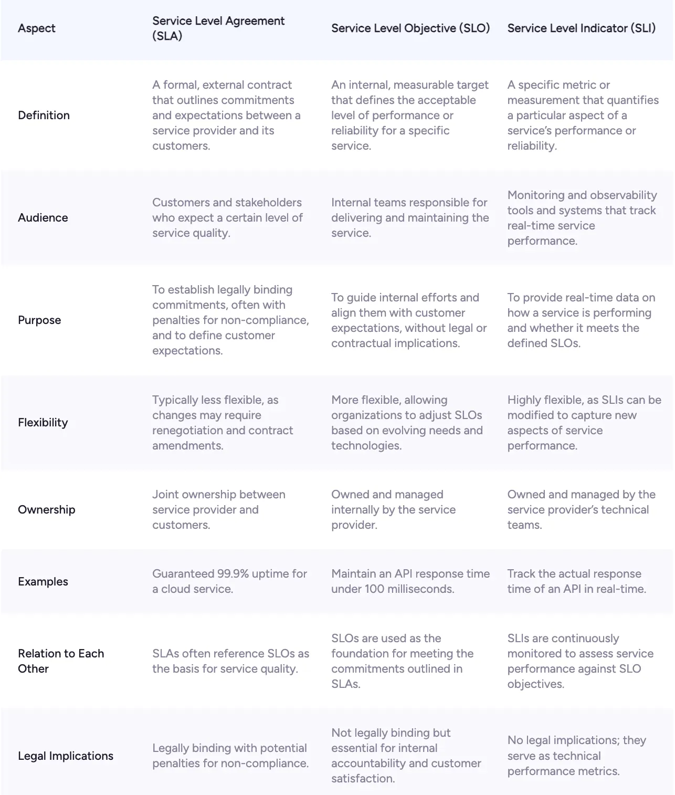

Monitoring & Observability Frameworks
Observability measures how well you can infer the internal states of a production ecosystem solely from its external outputs—metrics, logs, and distributed traces. Discover the engineering standards that drive data-driven visibility.
1. The Four Golden Signals (Google SRE Framework)
Originally formalized within the Google Site Reliability Engineering Handbook, tracking these four foundational dimensions ensures comprehensive visibility into user-facing and systemic performance anomalies.
Latency
The time taken to service a request. It is critical to differentiate between the latency of successful requests versus failed requests to prevent masking real bottlenecks.
Traffic
A measure of how much demand is being placed on your system, measured via high-level architecture metrics such as HTTP requests per second or concurrent database connections.
Errors
The rate of requests that fail, either explicitly (e.g., HTTP 500 internal server errors) or implicitly (e.g., an HTTP 200 success response containing unexpected or broken payloads).
Saturation
A measure of how "full" your system service footprint is. This highlights the most constrained infrastructure layers, such as memory consumption limits or disk I/O utility spikes.
2. The RED Method (Microservice Architecture Standard)
Developed by Tom Wilkie, the RED Method treats microservices as distinct standalone engines. It optimizes service-level dashboard patterns by focusing exclusively on request-driven behaviors:
- Rate: The volume of read and write requests entering your application context per second.
- Errors: The absolute quantity of inbound requests that fail to process successfully.
- Duration: The exact performance window and execution time that requests consume across runtime layers.
3. SLIs, SLOs, and SLAs: The Reliability Hierarchy
An SLI (Service Level Indicator), SLO (Service Level Objective), and SLA (Service Level Agreement) work together in a hierarchy of metrics to define and guarantee system reliability. By managing these parameters systematically, teams establish a shared data-driven vocabulary across development, infrastructure, and corporate business segments.
-
1. Service Level Indicator (SLI)
The specific metric you measure to assess system health (e.g., latency, error rate).- Example: The percentage of HTTP API requests that return a successful 200 status code within 100 milliseconds.
- Note: See core-metrics.html which has RED and Golden Signals for further SLI examples.
-
2. Service Level Objective (SLO)
The internal target or goal you set for your SLI.- Example: 99.9% of all API requests must successfully return a 200 status within 100 milliseconds over a 30-day period.
-
3. Service Level Agreement (SLA)
The legally binding promise made to users, along with consequences (like refunds or service credits) if the SLO is not met.- Example: If the API's monthly availability falls below 99.0%, the vendor guarantees a 10% refund on the customer's monthly bill.
Real-World Execution Examples
1. E-Commerce Website (Checkout Service)
- SLI: The time it takes for a user to click "Place Order" and receive a confirmation page.
- SLO: 99% of checkout requests must complete in less than 2 seconds.
- SLA: If the checkout service experiences an availability rate lower than 99.5% for two consecutive months, Developers must work on Tickets specifically to meet SLO Objective, Developers will be On-Call during applicable incidents and customers are entitled to account credits.
2. Streaming Platform (Video Playback)
- SLI: The time it takes for a video to start playing after a user presses "Play" (startup latency).
- SLO: 98% of videos must start playing in less than 1.5 seconds.
- SLA: Developers must work on Tickets specifically to meet SLO Objective, Developers will be On-Call during applicable incidents and Premium tier subscribers will receive a free month of service if startup latency exceeds 3 seconds for more than 4 hours in a billing cycle.
The Reliability Target Framework Matrix

Production Infrastructure Blueprints
Deploy this Observability Core Locally
A containerized, lightweight open-source Observability Core using Prometheus, Grafana, OpenTelemetry Collector, and Jaeger.
Get Local Deployment Blueprints →Deploy this Observability Core in AWS with AWS HA Observability Stack (AWS Prometheus + Grafana + OpenTelemetry Collector)
A production-grade, highly available, open-source observability pipeline engineered on AWS using a strictly isolated, layered Terraform design pattern.
Get AWS Deployment Blueprints →Further Reading & Official SRE References
To dive deeper into the theory and industry execution models of monitoring and telemetry, check out these authoritative industry materials:
-
Google SRE Handbook – Chapter 6: Monitoring Distributed Systems.
Source Guide: https://sre.google/sre-book/monitoring-distributed-systems/ -
Google SRE Workbook – Managing Service Level Objectives in Production Environments.
Source Workbook: https://sre.google/workbook/table-of-contents/ -
Google Cloud DevOps Framework – SRE Fundamentals: Defining SLIs, SLOs, and SLAs.
Source Context: https://cloud.google.com/blog/products/devops-sre/sre-fundamentals-slis-slas-and-slos -
Official OpenTelemetry Architecture Docs – Core Collector Telemetry Concepts.
Source Context: https://opentelemetry.io/docs/concepts/what-is-opentelemetry/ -
The RED Method – How to Design Service Metrics (Tom Wilkie / Grafana Labs).
Source Framework: https://grafana.com/blog/2018/08/02/the-red-method-how-to-scan-your-microservices-metrics/